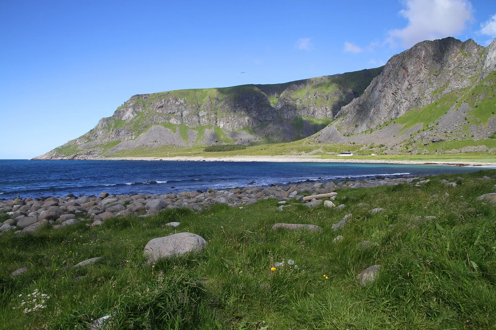

Unstad — Lofoten
Norvège · surf

Le surf au-dessus du cercle polaire : des vagues entourées de montagnes enneigées dans les îles Lofoten.
- Lieu
- Norvège
- Niveau
- Intermédiaire
- Activités
- surf
- Type d'eau
- Mer / océan
- Coordonnées
- 68.13, 13.52 (position approximative du secteur)
Dangers à connaître
- Eau glaciale.
- Conditions arctiques.
Le conseil d'Ocean Buddy
Surf arctique d'exception ; combinaison 6/5 + gants + cagoule indispensables.
Ouvrir dans Ocean Buddy Télécharger sur l'App Store
Source : Description historique Ocean Buddy · vérification externe en attente.